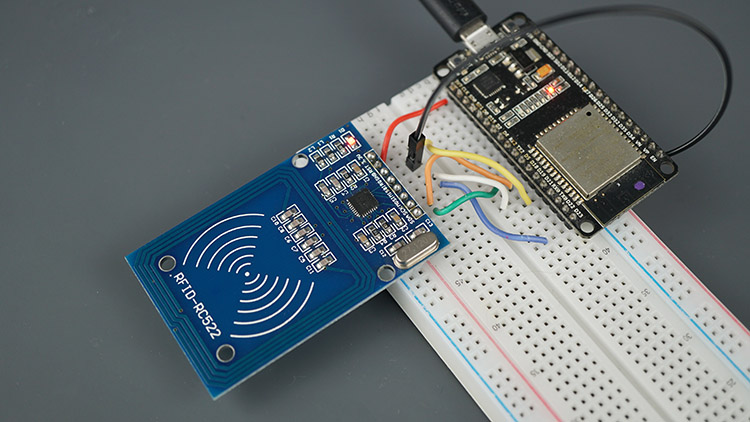

SEGURANÇA CONECTADA
SmartLock

O SmartLock é um projeto de controle de acesso inteligente que utiliza tecnologia RFID para identificar cartões e permitir a entrada de pessoas autorizadas. Integrado a um sistema com Arduino, ESP32 e banco de dados, o projeto oferece uma maneira prática de acompanhar as atividades da fechadura.
Objetivos
Nosso objetivo é desenvolver uma solução de segurança acessível e eficiente, capaz de automatizar o controle de acesso por meio de cartões RFID. O sistema permite cadastrar cartões e registrar todas as tentativas de entrada. Além disso, buscamos facilitar o acompanhamento dessas atividades por meio de um dashboard, que apresenta as informações de maneira organizada, incluindo históricos de acesso. Dessa forma, o SmartLock pretende oferecer mais praticidade, organização e controle sobre a entrada de pessoas, utilizando recursos tecnológicos para tornar o gerenciamento da segurança mais simples e eficiente.